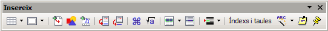
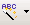

Crear entrades de text automàtic
A el LibreOffice Writer és possible emmagatzemar text (que pot incloure imatges, taules i camps) com Text automàtic, de manera que es pugui inserir més endavant. Si es vol, també es pot emmagatzemar text amb format. Per crear una entrada de text automàtic cal procedir de la manera següent:
- Seleccioneu el text, text amb imatges, taula o camp que es desitgi emmagatzemar com a entrada de text automàtic. Una imatge només pot ser emmagatzemada si s'ha ancorat com a caràcter i, pel cap baix, ve seguida i precedida d'un caràcter de text.
- Seleccioneu Edita | Text automàtic o premeu Ctrl+F3.
- Assenyaleu la categoria on emmagatzemar el text automàtic.
- Escriviu, a Nom, un nom de més de quatre caràcters. Així es permet utilitzar l'opció de text automàtic Mostra la resta del nom com a suggeriment durant l'entrada. Si es vol, també es pot modificar l'Accés directe proposat.
- Feu clic al botó Text automàtic i seleccioneu Nou. L'opció Nou (només text) crea també entrades de text automàtic però no emmagatzema les taules, els camps ni les imatges.
- Feu clic al botó Tanca.
Observeu el procés en aquesta animació:
Inserir text automàtic
Per inserir un text automàtic al document cal procedir com s'indica tot seguit:
- Situar-se al lloc del document on es vol inserir l'autotext.
- Seleccionar Editar | Auto Texto o Ctrl + F3.
- Seleccionar el text automàtic que es vol inserir i prémer el botó Inserir.
- També es pot escriure l'accés directe que s'ha fet servir per crear l'entrada de text automàtic (Accés directe) i tot seguit prémer la tecla F3.
Si s'ha activat Mostra la resta del nom com a suggeriment durant l'entrada, el programa mostra la proposta de text automàtic en escriure les tres primeres lletres del nom que s'hagi adjudicat a l'entrada; només cal prémer Retorn perquè s'insereixi el contingut al document. Tanmateix, si es té activada la barra d'eines Insereix,  es pot fer servir la icona  Text automàtic per inserir l'entrada. La fletxa que hi ha al costat de la icona permet desplegar les diferents categories, els continguts de cada una i escollir l'entrada desitjada.

|
|

|
|